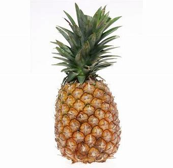

| Die Ananas . . . | |
|---|---|
eine tropische Frucht mit bräunlicher, rauer, schuppenartiger Schale und gelbem, sehr süßem Fruchtfleisch, das man frisch oder als gesüßte Konserve in Stücken oder Scheiben isst |
 |
| Zurück zum Obstkorb | |
| | |
| Orange | Weintraube |